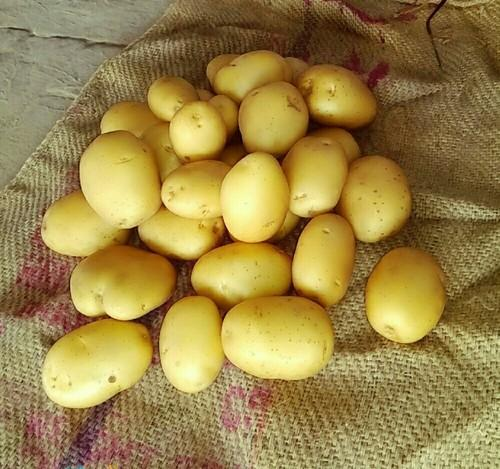
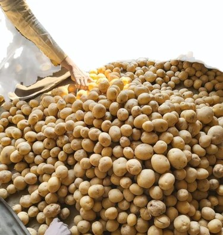
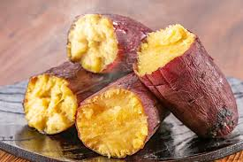

Type: Open Pollinated (Clonal Selection)
Where it is grown: Tamil Nadu (Nilgiris, Kodaikanal, Dindigul). Widely cultivated in North-Western and Central India and Himalayan hills where cool climate favors growth.
About: Plant is medium to tall, vigorous, with broad leaves. Tuber is round to oval, light brown skin, creamy white flesh. Average tuber weight: 40–60 g.

Type: Open Pollinated (Clonal Selection)
Where it is grown: Major potato growing belts in Tamil Nadu (Nilgiris, Dindigul). Widely grown across Himalayan states (Himachal Pradesh, Uttarakhand, Jammu & Kashmir) and in north Indian plains.
About: Plant is a medium-tall, erect, leafy type with white flowers. Tuber is white, oval to round in shape, with smooth skin and shallow eyes. Average tuber weight: 30–40 g.

Type: Open Pollinated (Released by TNAU, Coimbatore)
Where it is grown: Majorly in Tamil Nadu districts – Villupuram, Salem, Tirunelveli, Dharmapuri, Thanjavur. Also cultivated in Odisha, West Bengal, Uttar Pradesh, and Andhra Pradesh.
About: A trailing vine plant with heart-shaped leaves and purple flowers. Tubers are long, cylindrical, reddish skin with cream-colored flesh. Rich in starch, vitamin A (beta-carotene), and minerals.